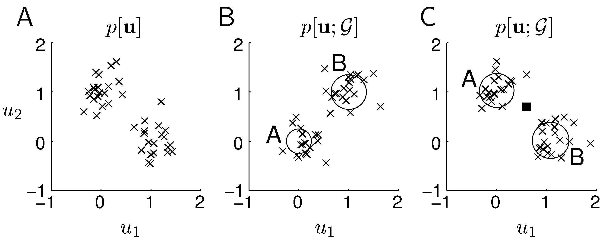
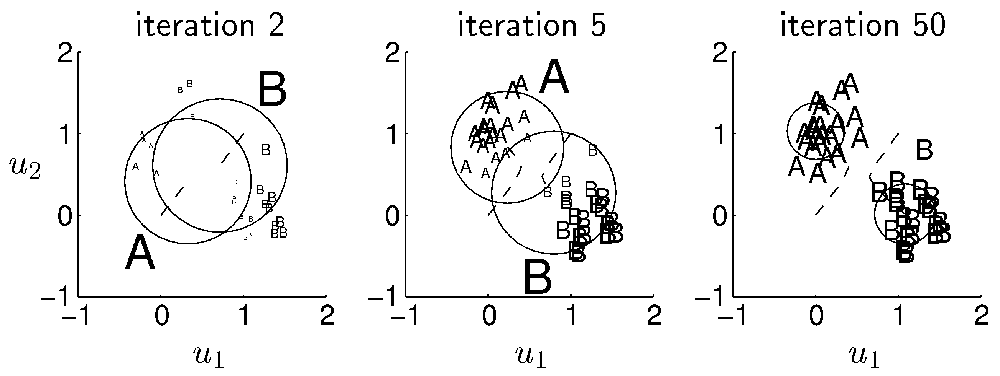
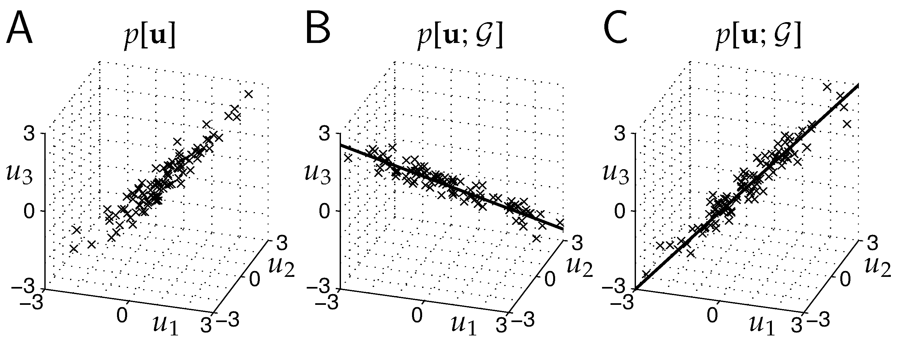
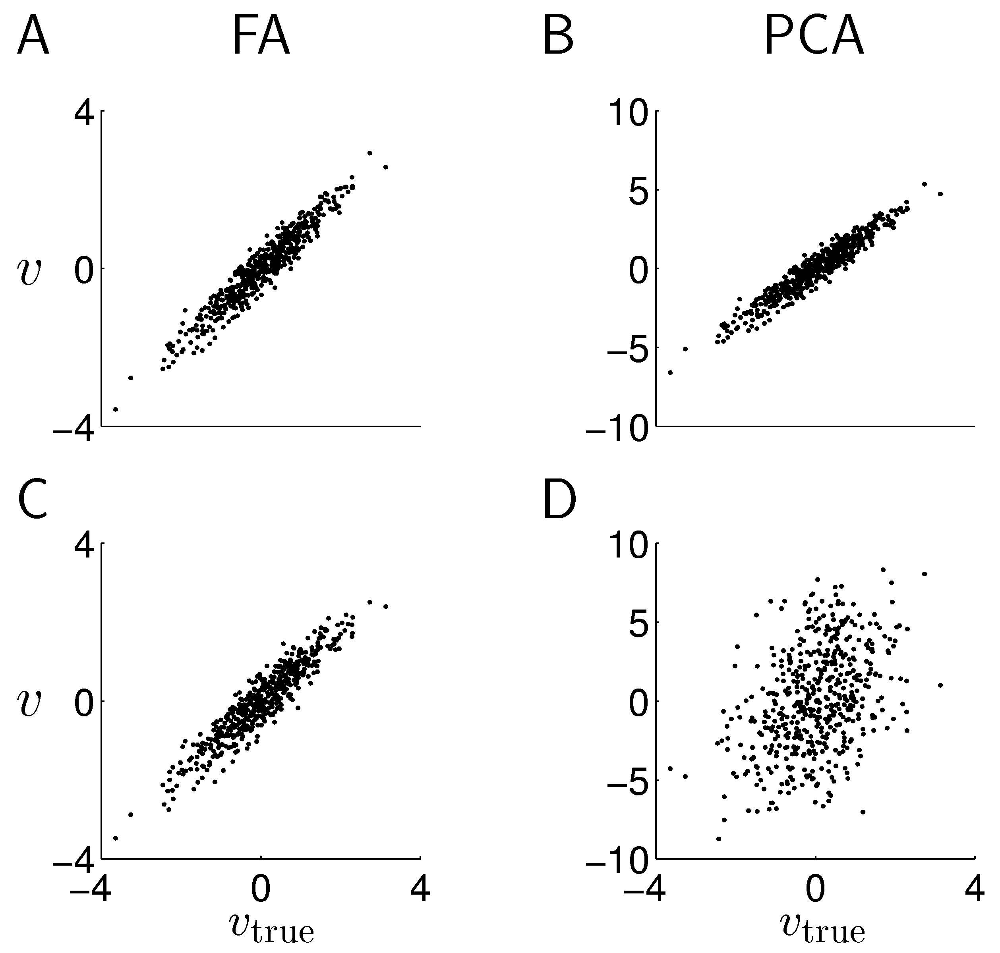
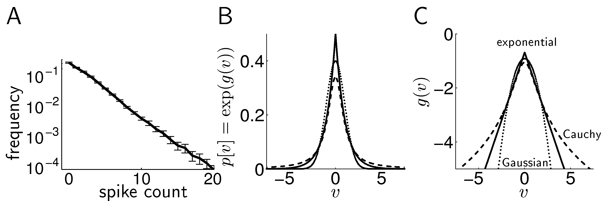
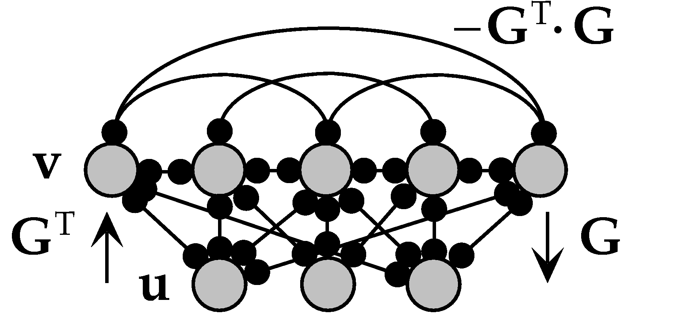
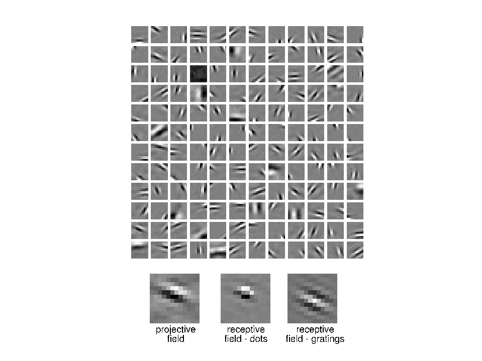
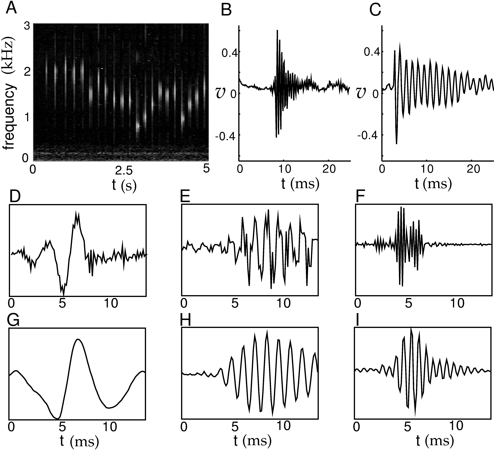
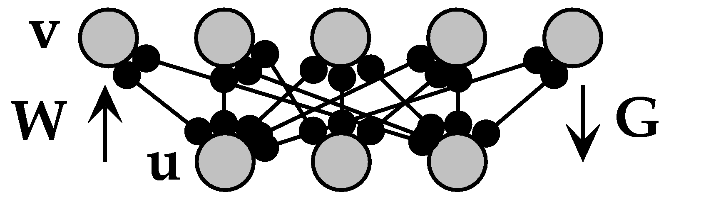
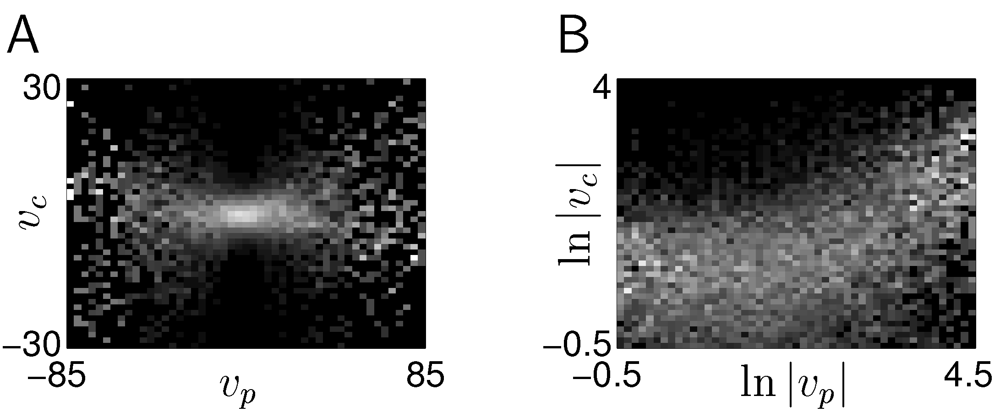

F11 · Representational learning and generative models¶
At a glance
Length — two to three sittings — the EM worked example and the sparse-coding derivation each need dedicated time; the framing and discussion are quick by comparison · about ~4.5-6 hours across 2-3 sittings Before this — F3, F9 (F2 helps the sparse-coding result land) Reading — D&A ch. 10 — Introduction · Density Estimation · Causal Models for Density Estimation · Discussion
Files for this lesson
Open on any device; nothing here needs a login.
Also: errata · all exercise code and data · all figures
Lecture¶
Reading alongside Dayan & Abbott chapter 10, section by section. Figures are the book's own, by number.
| Chapter section | Here |
|---|---|
| 10.1 Introduction (causal models, generative/recognition models, EM, continuous models) | Causes, generative models, recognition models, EM by example |
| 10.2 Density Estimation (theory of EM, invertible/noninvertible) | The free-energy bound and why E/M are separate steps |
| 10.3 Causal Models (mixture of Gaussians, factor analysis/PCA, sparse coding, ICA, Helmholtz machine) | Five generative models, one fitting procedure |
| 10.4 Discussion (multi-resolution, coding, overcompleteness, interdependent causes) | What sparse coding gets right and where it still fails |
| 10.5 Chapter Summary | Closing |
Causes, generative models, recognition models¶
Up to this point the course has asked how a stimulus maps onto a response: given input, predict firing rate. This chapter asks the reverse question of a representation itself — not what a neuron computes from its input, but what its input is for. The motivating number is blunt: roughly 10^8 photoreceptors hand the visual system a pixel list. Nothing about identifying a face falls out of that list directly. Something downstream has to re-represent it.
The chapter's move is to stop treating "good representation" as a property to define by intuition (compact, invariant, sparse — pick one) and instead treat it as a byproduct of fitting a probability model to the statistics of the input. An input vector u is assumed to arise from one or more underlying causes v, through a generative model: a prior P[v;G] over causes and a conditional p[u|v;G] describing how each cause produces data. Fitting the model means adjusting the parameters G so that the model's own marginal distribution, obtained by summing out the causes,
p[u;G] = Σ_v p[u|v;G] P[v;G],
matches the empirical distribution p[u] of real input data as closely as possible. Once G is fitted, a second model — the recognition model — runs the generative model backward: given an observed u, what is P[v|u;G], the probability that each candidate cause produced it? This is nothing but Bayes' rule applied to the generative distributions,
P[v|u;G] = p[u|v;G] P[v;G] / p[u;G].
The two running examples in 10.1 are worth holding onto numerically. The first is two clusters of 40 points each, each cluster an action-potential-like (u1,u2) pair attributed to one of two neurons, A or B. The heuristic — exactly two mutually exclusive causes, each Gaussian — is chosen before any fitting starts; only the mixing proportions γ_A, γ_B, the means g_A, g_B, and the variances get adjusted. The book's own number for one test point: after fitting, P[v=A|u;G] = 0.8 and P[v=B|u;G] = 0.2. That is deterministic recognition's probabilistic cousin — the model doesn't say "A," it says "mostly A." The second example trades the discrete cause for a continuous one: three noisy sensors reading the same underlying quantity, which is recovered as a single continuous v along the line the three readings cluster around — a one-cause factor analysis in miniature.

Figure 10.1 — Clustering: input data, an untrained generative model's synthetic samples, and the fitted result. From Dayan & Abbott, Theoretical Neuroscience, reproduced from the authors' teaching materials.
EM by example, then the general theory¶
Fitting G requires knowing which cause produced which data point — which is exactly the thing recognition is supposed to tell you, and recognition needs a fitted G to run. The circularity is broken by alternation: expectation-maximization (EM). Starting from a guess for G, the E phase computes the current responsibilities P[v|u;G] for every data point — "responsibility" is the chapter's term for how much a given cause is credited with having produced that point. The M phase then refits G by taking a weighted average over the data, with each point's contribution to cause v weighted by that point's responsibility for v. For the clustering example this is concrete: the new mean for cluster v is the responsibility-weighted average of all the input points, divided by the average responsibility for v; the new variance is the responsibility-weighted average squared deviation. Three iterations of this (figure 10.2) are enough to pull two badly-placed Gaussians onto the real clusters; the "trails" in that figure are literally the path the cluster means take, iteration to iteration.

Figure 10.2 — EM for clustering across three iterations, means walking toward the data. From Dayan & Abbott, Theoretical Neuroscience, reproduced from the authors' teaching materials.
Section 10.2 states why alternation works at all, via a quantity F(Q,G) built from any candidate recognition distribution Q (not necessarily the correct one) and the generative parameters G. Algebraic rearrangement shows
F(Q,G) = L(G) − D_KL(Q[v;u] , P[v|u;G]),
where L(G) is the average log likelihood of the data under the model. Because KL divergence is never negative, F is always a lower bound on L, with equality exactly when Q matches the true recognition distribution. This single inequality is the whole EM theorem: the E phase raises F by improving Q (pulling it toward P[v|u;G], tightening the bound); the M phase raises F by improving G (holding Q fixed). Each phase can only raise F, and F never exceeds the true log likelihood — so L itself climbs monotonically across EM iterations, even though neither phase touches L directly.
The split matters for a reason that is easy to miss: when the generative model is invertible — Bayes' rule in closed form, as for the Gaussian examples above — the E phase just computes P[v|u;G] exactly and sets Q equal to it. When it is not invertible, Q has to be approximated, either by a single best-guess function v(u) (deterministic recognition, the regime of sparse coding) or by a parameterized family Q[v;u,W] fitted by its own small optimization (probabilistic approximate recognition, the regime of the Helmholtz machine below). Running only the E phase forever, with G frozen, would just keep refitting Q to a generative model that is never improving; running only the M phase, with Q frozen, pushes G toward matching a cause assignment that quickly stops reflecting reality as G changes underneath it. The guarantee of monotonic improvement in L depends on alternating both.
Five generative models, one fitting procedure¶
Section 10.3 runs the same E/M machinery across a family of models, distinguished only by the heuristics built into the prior and the generative distribution. Mixture of Gaussians generalizes the clustering example to N_v causes; squeezing the shared variance toward zero turns the probabilistic responsibilities into hard either/or assignments, which is exactly the K-means algorithm. Factor analysis replaces the discrete cause with a continuous vector v under a Gaussian prior and a linear generative mean G·v; squeezing its variance to zero likewise degenerates it into principal components analysis, with the fitted direction g converging on the eigenvector of the data covariance with the largest eigenvalue — the textbook PCA result, arrived at through density estimation rather than variance maximization. A built-in experiment (figure 10.4) shows why this distinction is not academic: when one of three correlated sensors is corrupted by much larger noise (variance 9 instead of 0.25), PCA is misled by that sensor's raw variance and recovers a cause poorly correlated with the true one, while factor analysis — which fits the noise variances separately from the shared structure — is barely perturbed.

Figure 10.3 — Factor analysis: data, an initial generative model's synthetic samples, and the fitted line. From Dayan & Abbott, Theoretical Neuroscience, reproduced from the authors' teaching materials.

Figure 10.4 — Factor analysis versus PCA recovering a true cause, with and without one noisy sensor. From Dayan & Abbott, Theoretical Neuroscience, reproduced from the authors' teaching materials.
Gaussian causes, though, cannot produce the activity statistics actually seen in cortex. A macaque IT cell's spike counts, averaging two spikes per window, follow something close to an exponential: mostly near zero, occasionally large. Sparse coding (Olshausen & Field) keeps the linear, diagonal-covariance generative distribution of factor analysis but replaces the Gaussian prior with a sparse one, p[v;G] ∝ Π_a exp(g(v_a)), where g(v) = −α|v| gives a double exponential and g(v) = −ln(β²+v²) gives a Cauchy distribution — both far heavier-tailed than the Gaussian's g(v) = −v²/2. Kurtosis, k = ⟨(v−v̄)⁴⟩/⟨(v−v̄)²⟩² − 3, is the chapter's formal handle on this: zero for Gaussian, positive (super-Gaussian, sparse) for both alternatives.

Figure 10.5 — Sparse distributions: an IT cell's spike-count histogram against double-exponential, Cauchy, and Gaussian priors. From Dayan & Abbott, Theoretical Neuroscience, reproduced from the authors' teaching materials.
Because this prior makes the exact recognition distribution intractable, sparse coding uses deterministic approximate recognition: v(u) is found by letting a dynamical equation relax to the value that maximizes F, a rule that reads exactly like the firing-rate network of earlier chapters, with feedforward drive G^T·u, recurrent inhibition through −G^T·G, and a nonlinear self-term g′(v). The M phase then applies a delta rule to the generative weights G.

Figure 10.6 — A recurrent network implementing the sparse-coding E phase. From Dayan & Abbott, Theoretical Neuroscience, reproduced from the authors' teaching materials.
Trained on patches of natural scenes (12×12 pixels, N_u = N_v = 144 — a stand-in for the roughly 40-to-1 expansion from LGN to V1), the resulting projective fields — the inputs each cause tends to generate, plotted as columns of G — come out localized in space, tuned to orientation, and spread across spatial scales: a Gabor-like bank, closely resembling measured V1 simple-cell receptive fields.

Figure 10.7 — Projective fields of a sparse-coding network trained on natural image patches, compared with dot- and grating-mapped receptive fields. From Dayan & Abbott, Theoretical Neuroscience, reproduced from the authors' teaching materials.
Shrinking the generative noise of sparse coding to zero, with as many causes as inputs, makes the recognition map exactly invertible and turns the fitting rule into independent components analysis (ICA): a direct gradient ascent on log p[v] + ln|det W| that, with prior p[v] ∝ 1/cosh(v), gives the update W ← W + ε(W − tanh(v)[v·W]). ICA trades sparse coding's approximate inversion for an exact one, which means — unlike sparse coding — it has well-defined receptive fields (rows of W) as well as projective fields (columns of G = W⁻¹), and the two need not look alike, as the tooth-tapping sound example shows.

Figure 10.8 — Independent components of tooth-tapping sounds: receptive and projective fields of three extracted causes. From Dayan & Abbott, Theoretical Neuroscience, reproduced from the authors' teaching materials.
The last model, the Helmholtz machine, generalizes to hierarchies: a top-down generative network with weights G and a bottom-up recognition network with weights W, trained by an approximate, deliberately symmetrized EM in which the "wake" phase trains G on real data and a "sleep" phase trains W on data fantasized by the generative model itself.

Figure 10.9 — The Helmholtz machine's paired bottom-up recognition and top-down generative networks. From Dayan & Abbott, Theoretical Neuroscience, reproduced from the authors' teaching materials.
What sparse coding gets right, and where it still fails¶
Section 10.4 reframes the sparse-coding result inside the older engineering language of multi-resolution image coding — banks of filters, localized in both space and spatial frequency, at multiple scales and orientations. Measured directly: raw pixel intensities are close to uniformly distributed, the maximum-entropy — and therefore maximally expensive — distribution for a bounded variable, while the output of a fine-scale oriented filter follows the same sparse, double-exponential shape as figure 10.5. Lower entropy at the filter output means a cheaper code; sparse coding and multi-resolution coding are, from this angle, solving the same compression problem.

Figure 10.12 — Residual dependence between fine- and coarse-scale filter outputs at the same location and orientation. From Dayan & Abbott, Theoretical Neuroscience, reproduced from the authors' teaching materials.
But the chapter does not let the result stand uncriticized. Multi-resolution filter outputs — and, it turns out, sparse-coding causes fitted to real images — are not actually independent of each other, despite independence being exactly what the prior was built to encourage: a bar in the image activates oriented filters at nearby locations and across nearby scales together, as figure 10.12's "bow-tie" conditional distribution shows. The causes recovered also look nothing like a natural account of what generates an image — a pixel-level vocabulary of bars and edges, not a scene-level vocabulary of objects. The chapter is explicit that both are open problems: coordinated, large-scale dependency structure is exactly what a single flat layer of independent causes cannot capture, and the natural fix — a hierarchy of causes, with higher levels explaining structure in the causes below them — is named but admittedly undeveloped at this point in the book. (A later part of this course develops a specific version of that hierarchical idea, under the heading of predictive coding.)
Closing¶
The chapter summary is worth restating without softening it: an objective built from nothing but a statistical heuristic — favor independent, sparse causes — applied to nothing but the pixel statistics of natural photographs, reproduces receptive fields that electrophysiology measured in V1 decades earlier by entirely different means. That is the strongest connection this course has drawn between a computational principle and a measured biological fact. It is also worth being precise about what it does not establish: it does not show that V1 performs EM, or sparse coding specifically, or that independence is the right heuristic at any level beyond oriented edges — only that the statistics of the optimization problem, not any mechanism, are doing the explanatory work, and that the match with cortex is the test the chapter chose to put that explanation through.
Lesson spec¶
Goal: Show that representation learning can be posed as fitting p(input) rather than a stimulus-response map, via causal models with latent variables and a recognition model that inverts them. Establish EM as the fitting procedure and walk it on a concrete numeric case. Connect sparse coding and ICA to the empirical fact that fitting them to natural images reproduces V1 simple-cell receptive fields.
Scope — what the lesson covers
- Density estimation as the goal of unsupervised representation learning, contrasted with supervised stimulus-response mapping
- Causal models: latent causes, a generative model of the input they would produce, and a recognition model inferring causes from input
- EM as two alternating phases — the E-step inferring latents at fixed parameters, the M-step updating parameters at fixed latents — worked by hand on a small example
- Sparse coding and independent components as specific causal models, and their fit to natural images producing oriented, localised, bandpass filters matching measured simple cells
- Not covered: precision-weighted inference and the free-energy formulation of this same fitting problem (C1, C3)
You should be able to answer: 1. For a two-cause discrete generative model with given priors and likelihoods, compute the E-step posterior responsibilities for a specific input. 2. Using those responsibilities, carry out the M-step update and state the new parameter value. 3. What penalty term makes sparse coding sparse, and how does that differ mechanically from ICA's independence constraint? 4. Sparse-coding filters fit to natural images come out oriented and localised rather than Fourier-like — which statistical property of natural images forces that? 5. In the E-step/M-step split, which step corresponds to inference and which to learning, and what goes wrong if you run one repeatedly without the other?
Feeds: C1 (the generative model's prediction error becomes the energy function), C2 (the E-step/M-step split is the template for the two nested loops), and C4 to C6 generally.
Done when: You works an EM step by hand on a toy causal model and states, without notes, why sparse coding on natural images yields V1-like filters.
Authors' exercises¶
Dayan & Abbott wrote exercise sets for every chapter and publish them free at gatsby.ucl.ac.uk/~dayan/book. This lesson's are in exercises/c10.pdf (chapter 10), with any code and data under exercises/exercises/c10/. Work all.
They are the authors' problems, not this course's, so they take precedence where the two overlap: if an exercise here duplicates one of theirs, do theirs. They are written for MATLAB; translating to numpy is part of the work and is not hard. The teacher agent has no answer key for these — it marks by reading your code and output, and says so rather than pretending to a key it does not have.
Coursework¶
Consume, then apply, then refine: guided reading (Piece 3) → derivation (Piece 1) → simulation (Piece 2) → written explanation (Piece 4). Pieces are numbered by type, not sequence.
Coverage map
| Piece | Type | Lesson acceptance criteria addressed |
|---|---|---|
| 1 | Derivation | AC1 (E-step responsibilities), AC2 (M-step update) |
| 2 | Simulation | AC4 (statistical property forcing oriented/localized filters) — empirical demonstration |
| 3 | Guided reading | AC3 (sparse coding vs ICA penalty), AC4 (textual account), AC5 (E/M ↔ inference/learning) |
| 4 | Written explanation | AC3, AC4, AC5 — integrates all three into one account |
Type: derivation · Time: 75-100 min
Learning goals - Write down a causal model's generative distribution over an input given discrete latent causes, and invert it with Bayes' rule to get an E-step posterior. - Turn E-step posteriors into posterior expectations over causes. - Carry out a gradient-based M-step update of generative weights using those expectations, and see concretely why this is "learning at fixed beliefs" rather than "inference at fixed parameters."
Task
Consider a causal model with two independent binary causes \(s_1, s_2 \in \{0,1\}\), each with prior \(P(s_i=1) = 0.5\) (so all four joint states \((s_1,s_2)\) have prior probability \(0.25\)). The generative model produces a scalar input
Current parameter estimates are \(g_1 = 2\), \(g_2 = -1\). A single input is observed: \(y = 1.5\).
- E-step. For each of the four joint states \((s_1,s_2) \in \{(0,0),(0,1),(1,0),(1,1)\}\), compute the predicted mean \(\mu(s_1,s_2) = g_1 s_1 + g_2 s_2\), the Gaussian likelihood \(P(y \mid s_1,s_2)\) (you may drop the shared normalizing constant \(1/\sqrt{2\pi}\) since it cancels), and the posterior responsibility \(r(s_1,s_2) = P(s_1,s_2 \mid y)\) by multiplying by the prior and renormalizing over the four states.
- From the four responsibilities, compute the posterior expectations \(E[s_1 \mid y]\) and \(E[s_2\mid y]\) (sum the responsibilities of the states where that cause is on).
- M-step. Using \(\hat{y} = g_1 E[s_1\mid y] + g_2 E[s_2\mid y]\) as the model's expected reconstruction, compute the error \(y - \hat y\), then apply the delta-rule gradient update $\(\Delta g_i = \eta \,(y - \hat y)\, E[s_i \mid y], \qquad \eta = 1\)$ State the updated \(g_1, g_2\).
Do this by hand, showing every intermediate number (the four \(\mu\)'s, the four exponents, the four unnormalized values, the normalizer, the four responsibilities, the two expectations, \(\hat y\), the error, and the two updated weights).
Deliverable
A pen-and-paper (or typed) worked solution showing all of the above numbers in order, plus one sentence identifying which of your two steps is "E" and which is "M" and why.
Rubric — how this is marked
| Band | Criteria |
|---|---|
| Strong | All four responsibilities correct to ±0.005, both posterior expectations and both updated weights correct to ±0.01, every intermediate quantity shown, E/M labeling sentence correct. |
| Adequate | Method fully correct (joint enumeration → prior×likelihood → renormalize → expectation → delta rule) but one arithmetic slip (e.g. a squared-error term or a sign) that the response doesn't need explained back — just recomputed. |
| Not yet | Skips the prior weighting (uses raw likelihoods as responsibilities), normalizes over the wrong set of states, or updates \(g_1,g_2\) directly from responsibilities without the reconstruction-error term (conflating E- and M-steps). |
Grader key hidden
The marking criteria for this piece are in the teacher build.
Type: simulation · Time: 90-120 min
Learning goals - Implement the E-step/M-step structure of Piece 1 in its continuous, high-dimensional form: ISTA-style sparse inference of a code, alternated with a gradient update of a dictionary. - Observe directly that a sparsity-inducing prior, applied to data that really is a sparse combination of localized oriented components, recovers those components from a random initialization. - Understand the gap between this synthetic demonstration and the empirical natural-image result it stands in for.
Task
This is a synthetic stand-in for natural images — no image dataset is downloaded. You will generate patches as sparse combinations of a known "ground truth" dictionary of Gabor-like filters, then check whether a sparse-coding fit recovers that dictionary from a random start. This demonstrates the mechanism (sparse prior + sparse-generating data ⇒ sparse-coding learning recovers the generators) but does not by itself demonstrate that real photographic natural images have this structure — that empirical claim (Olshausen & Field, and the fit to V1 receptive fields covered in the reading) is about actual image statistics, which have richer structure than "exactly \(n\) active Gabor atoms plus Gaussian noise."
Use exactly these parameters so your numeric result is checkable against the key:
numpy.random.default_rng(0). Patches are \(16\times16\) (\(d=256\) pixels).- Planted dictionary: 8 Gabor-like atoms, orientations
theta = linspace(0, pi, 8, endpoint=False), each built asenvelope * carrierwithsigma=3.0,freq=0.25,phase=0, centered on the patch, each atom normalized to unit norm. This gives youD_true, shape \((256, 8)\). - Generate \(N=2000\) synthetic patches: for each, pick
n_active=2of the 8 atoms at random (without replacement), draw a coefficient for each fromUniform(1,3)times a random sign, sum those weighted atoms, then add pixel noise \(\sim \mathcal{N}(0, 0.05^2)\). - Initialize a learned dictionary
Dwith 8 columns of random Gaussian noise, each normalized to unit norm. - Alternate for 60 epochs, in minibatches of 100 patches, in random order each epoch:
- Inference (E-step analog): for the current batch, infer a sparse code \(A\) by 50 iterations of ISTA: repeatedly take a gradient step on the squared-error term (\(A \leftarrow A - \text{step}\cdot(-D^T(X-DA))\), with
step = 1/||D||_2^2using the spectral norm) followed by a soft threshold at \(\lambda=0.2\cdot\text{step}\): \(A \leftarrow \mathrm{sign}(A)\max(|A|-\lambda,0)\). - Dictionary update (M-step analog): with \(A\) fixed, take one gradient step on \(D\): \(D \leftarrow D - \eta_D \cdot (-(X-DA)A^T/\text{batchsize})\) with \(\eta_D=0.5\), then renormalize each column of \(D\) back to unit norm.
- After training, compute the recovery metric: \(C = |D_{true}^T D|\) (absolute value handles the sign ambiguity of each learned atom), then for each of the 8 true atoms take its best match,
best_match = C.max(axis=1). Reportbest_matchand its mean and min.
Keep the whole script under ~100 lines (the data-generation half above is boilerplate; the alternating fit loop is the exercise).
Deliverable
Your script, its printed best_match array with mean and min, and 3-5 sentences: (a) what the mean/min tell you about recovery, (b) what would you expect if you set \(\lambda=0\) (no sparsity term) instead — would you still expect oriented, localized recovered atoms? Why or why not? — and (c) one sentence on what this synthetic result does and does not demonstrate about real V1 receptive fields.
Rubric — how this is marked
| Band | Criteria |
|---|---|
| Strong | Implements ISTA inference + dictionary gradient step correctly; mean best-match cosine similarity ≥ 0.9 (from a faithful run of the given recipe, this should land near 0.99); correctly reasons that \(\lambda=0\) removes the pressure toward sparse/localized solutions (recovery would degrade toward diffuse, non-Gabor-like components, closer to a PCA-type basis); states the synthetic-vs-real-image caveat accurately. |
| Adequate | Alternating algorithm works and shows clear (if partial) recovery, e.g. mean similarity roughly 0.7-0.9, possibly from small deviations in hyperparameters or iteration counts; gets the qualitative \(\lambda=0\) reasoning right even if untested; states the caveat, if loosely. |
| Not yet | No sparsity term implemented (plain least-squares dictionary fit), or the dictionary update has no alternation with inference (e.g. one-shot regression), or recovery is near chance (mean similarity below ~0.5) with no diagnosis of why, or the caveat about synthetic-vs-real is omitted or reversed (i.e. claims this proves the V1 result about real images). |
Grader key hidden
The marking criteria for this piece are in the teacher build.
Type: guided reading · Time: 45-60 min
Learning goals - Locate, in the chapter's own terms, the density-estimation framing of representation learning and the causal-model/recognition-model machinery. - Be able to state the mechanical difference between sparse coding's and ICA's constraints on the code. - Identify the statistical property of natural images responsible for the V1-like result, and the inference/learning roles of E- and M-steps, in the chapter's own account.
Task
Answer the following from D&A ch. 10, citing which named section (Introduction, Density Estimation, Causal Models for Density Estimation, Discussion) each answer comes from. Answer in your own words, not as a transcription.
- (Introduction) The chapter reframes what earlier chapters treated as a stimulus-response mapping problem as a different kind of problem entirely. What is that problem, and what quantity (over what variable) does a generative/causal model try to characterize instead of a conditional firing-rate model?
- (Density Estimation) What does "density estimation" mean as a goal for a model of neural representation, and how does the distribution a generative model assigns differ in role from the distribution a recognition model assigns?
- (Causal Models for Density Estimation) Define, in this chapter's terms, the three pieces of a causal model: the causes, the generative model, and the recognition model. What does each one map to what?
- (Causal Models for Density Estimation) [AC5] The fitting procedure alternates two steps. Which step corresponds to inference and which to learning? What goes wrong — concretely, not just "it won't work" — if you repeatedly ran only one of the two steps?
- (Causal Models for Density Estimation) [AC3] What penalty or constraint makes sparse coding's code sparse? How does ICA's independence constraint act differently at the mechanical level (i.e., what is it a constraint on, and how does enforcing it differ from penalizing activity directly)?
- (Causal Models for Density Estimation / Discussion) [AC4] When sparse coding or ICA is fit to natural image patches, the resulting filters come out oriented and spatially localized rather than, say, Fourier-like (globally periodic). What statistical property of natural images is responsible for this, and why does a sparse/independence-seeking objective pick it up?
- (Discussion) What limitation or open question does the chapter itself raise about causal models of this kind as models of cortical representation?
Deliverable
Written answers to all seven, each 2-5 sentences, each labeled with its source section.
Rubric — how this is marked
| Band | Criteria |
|---|---|
| Strong | All seven answered correctly in your own words, each attributed to the right named section, Q4 and Q5 mechanically precise (not just restating the question). |
| Adequate | Five or six of seven correct/well-attributed; Q4 or Q5 slightly vague on mechanism but not wrong. |
| Not yet | Three or more answers wrong, mis-attributed to the wrong section, or copied verbatim from the text rather than restated. |
Grader key hidden
The marking criteria for this piece are in the teacher build.
Type: written explanation · Time: 45-60 min
Learning goals - Integrate the mechanical EM result (Piece 1), the empirical recovery result (Piece 2), and the textual account (Piece 3) into one coherent explanation. - State, without notes, why a sparse/independent-causes generative model fit to image-like data produces V1-like filters.
Task
In 300-600 words, explain: (1) how casting representation learning as density estimation via a causal model turns "find good features" into a fitting problem with an E-step and an M-step; (2) mechanically, what distinguishes sparse coding's constraint from ICA's; (3) why fitting such a model to (natural, or your synthetic stand-in) image data yields oriented, localized filters rather than some other basis, referencing what you actually observed in Piece 2; and (4) what specifically breaks if the E-step and M-step are not alternated. Close with one sentence (no more) noting that this generative/recognition-model split is the same shape of problem your own predictive-coding project sits inside, without elaborating — that connection is developed properly in a later track.
Write this without re-reading Pieces 1-3.
Deliverable
A 300-600 word written explanation covering points (1)-(4) plus the closing sentence.
Rubric — how this is marked
| Band | Criteria |
|---|---|
| Strong | All four points covered accurately and connected to each other (not four disconnected paragraphs); references your own Piece 2 numbers/observations concretely; closing sentence present and appropriately brief; within word count. |
| Adequate | Covers three of four points correctly; some hand-waving on the sparse-vs-ICA mechanical distinction or the E/M-alternation failure mode; within or slightly outside word count. |
| Not yet | Misstates the E-step/M-step roles (e.g. swaps which is inference vs learning), treats sparse coding and ICA as the same constraint, or gives no concrete link to the Piece 2 result. |
Grader key hidden
The marking criteria for this piece are in the teacher build.
Completion bar¶
- [ ] Piece 1: all four E-step responsibilities, both posterior expectations, and both updated weights match the grader key within tolerance; E/M roles correctly identified.
- [ ] Piece 2: script implements ISTA inference alternated with a dictionary gradient step (no sparsity term ⇒ not yet); reported mean best-match cosine similarity ≥0.9 (or ≥0.7 with a diagnosed reason for the gap); \(\lambda=0\) reasoning and the synthetic-vs-real caveat both stated correctly.
- [ ] Piece 3: all seven guided-reading questions answered in your own words, each correctly attributed to its named section, verified against the physical text by the teacher.
- [ ] Piece 4: 300-600 word explanation, written without notes, correctly covering the density-estimation framing, the sparse-coding/ICA distinction, the Piece 2-grounded account of why filters localize, and the E/M-alternation failure mode, plus the one-sentence forward pointer.
- [ ] Reader can, unprompted and without notes, state why sparse coding on (real or synthetic) natural-image-like data yields V1-like filters — this is F11's own "done when" bar, checked verbally or in a follow-up prompt before moving to track C.